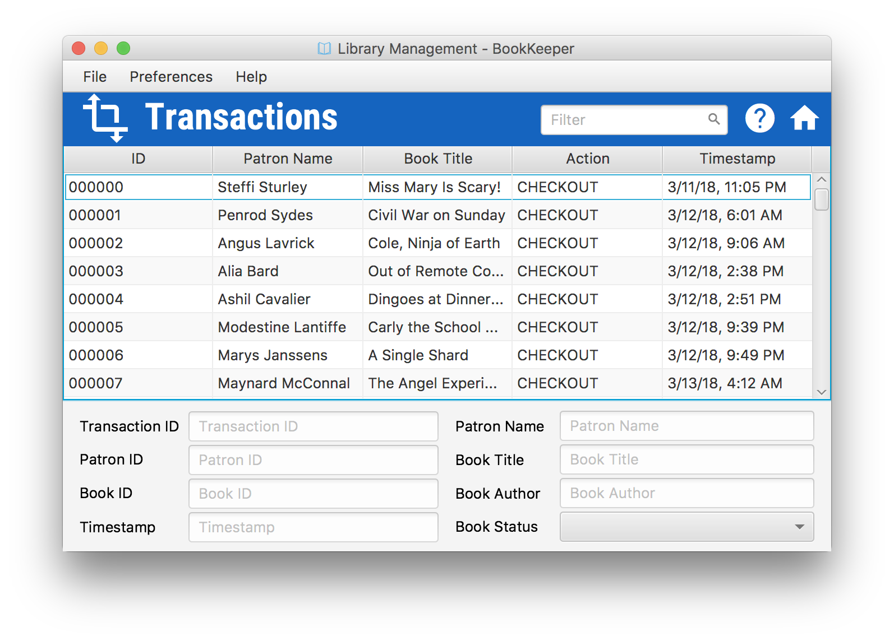

Viewing Transactions
- View Details
- Select an item in the Table
- View details in the Details Pane
-
Transactions cannot be edited or deleted. They are managed and created automatically as transactions
occur.
-
View Managing Patrons to view methods of accessing Patron Types.
-
To return Home, press the home icon to the right of the search bar
